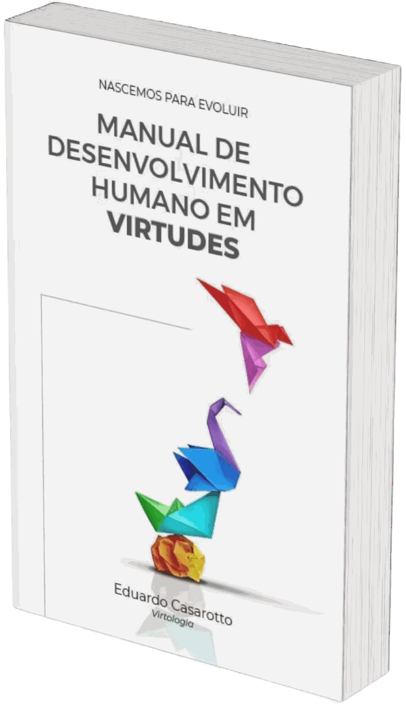

Livro · Eduardo Casarotto
Manual de Desenvolvimento Humano em Virtudes
Se a Virtologia tivesse que caber em um livro só, seria este. As 33 virtudes, uma a uma, com o exercício que grava cada uma no cérebro como memória de longo prazo.
O que vem junto
Os 33 exercícios de neuroplasticidade
Um roteiro completo por virtude: o texto que a explica, as perguntas para discutir, os exercícios, a meditação, a reflexão, a prática e a afirmação. É o conjunto inteiro do método, sem nada retido.
A Avaliação de Desempenho Moral
O instrumento que diz em que estágio você está em cada uma das 33 competências, e o que se espera daquela competência quando ela está construída.
O caderno de anotações
As tabelas de acompanhamento do ciclo e o espaço para registrar o percurso: o que foi praticado, o que resistiu, e onde a virtude ainda não pegou.
O que é uma virtude
Virtude, aqui, não é qualidade moral, não é traço de temperamento e não é coisa que a pessoa tem ou não tem de nascença.
Virtude é competência. E competência é a soma de conhecimento, habilidade e atitude: saber, saber fazer e fazer.
A distinção parece sutil e não é. Dá para saber tudo sobre o perdão - o que Jesus disse, o que Buda disse, o que a literatura clínica diz - e não ter a habilidade de perdoar uma pessoa. Conhecimento sobre uma virtude não é a virtude. É por isso que ler sobre paciência não torna ninguém paciente, e por isso que este livro não para na explicação.
De onde vem o que atrapalha
As 33 virtudes são elaboradas pelo lobo frontal: a região que planeja, inibe o impulso, projeta o futuro e decide por princípio. É a região que nos separa do animal.
O que compete com ela vem de baixo. No tronco cerebral está escrita a mensagem da sobrevivência, e dela saem duas raízes que a Virtologia identifica na origem de quase todo sofrimento psíquico.
As duas raízes
O orgulho é a necessidade primitiva de ter importância, para ser aceito e aprovado, e assim ter a sensação de sobrevivência. Dele derivam a vaidade, a comparação, a dominância, a necessidade de controle, a vingança, a inveja, a arrogância e a reatividade à crítica. Também a timidez e a vergonha, que parecem o contrário e não são.
O egoísmo é a prioridade das próprias necessidades sobre as do outro. Dele derivam a agressividade, a indiferença, a inflexibilidade, o escapismo e a transgressão.
A Virtologia descreve os dois como sistemas neurofuncionais, o SNO e o SNE, e os trata pelo que são: herança da espécie, não defeito de caráter. Ninguém escolheu o cérebro que recebeu.
Daí a virada que sustenta o livro inteiro. A virtude não é um freio aparafusado por cima desses sistemas. É a mudança do cálculo que eles fazem.
A humildade desloca o valor que depende da posição para o valor que não depende dela. A abnegação desloca o cálculo do eu para o outro. E o mesmo vale, uma a uma, para as 33.
É por isso que a Virtologia chama as virtudes de ideias que moldam o cérebro. Elas não são conselhos sobre como viver. São estruturas que se instalam.
Como este livro nasceu
Toda religião propõe um caminho para o desenvolvimento humano. Quase todas dizem coisas diferentes.
A pergunta que originou este livro foi outra: onde elas concordam?
Foram mais de 15 anos de pesquisa sobre as crenças de dezenas de tradições. Budismo, Confucionismo, Cristianismo em linhas católicas e evangélicas, Fé Bahai, Hinduísmo, Islamismo, Judaísmo, Taoísmo, Kardecismo, Umbandismo, Xintoísmo e outras.
O que sobrou da comparação foram 33 virtudes, e os passos que cada tradição ensina para desenvolvê-las.
É o que as religiões do mundo têm em comum, separado do que as divide.
Sobre esse achado, a Virtologia acrescentou o que faltava, e é aqui que a obra deixa de ser filosofia moral: a descrição do que acontece no cérebro quando cada virtude se constrói, e o exercício que produz essa construção.
A tese que sustenta o livro
Os problemas globais - fome, desigualdade, racismo, guerra, questões socioambientais - são tratados no livro como sintomas do nível de desenvolvimento das virtudes das pessoas que habitam o planeta.
Lutar contra eles não está errado. Mas, na leitura da obra, não resolve. Quando as pessoas se tornam mais humanas, ou seja, têm seu lobo frontal fortalecido, seu comportamento deixa de ser governado pelas partes mais primitivas do cérebro, tratando seu orgulho e egoísmo e, assim, esses problemas deixam de ser produzidos.
As 33 virtudes
Cada uma tem o seu capítulo, com a explicação do que ela é, o que ela desmonta, as perguntas para se examinar, os exercícios, a meditação, a prática e a afirmação que a constrói.
Elas estão na ordem do livro, que não é aleatória: a humildade vem primeiro porque sem ela nenhuma das outras se sustenta. Pedir aceitação a quem ainda não identificou o próprio orgulho produz encenação de aceitação, não aceitação.
Humildade
Reconhecer as próprias limitações, fraquezas e erros sem precisar se engrandecer nem se comparar com ninguém. Não é o gesto de se diminuir diante do outro, que costuma ser o orgulho em forma sofisticada. É a capacidade de se ver como se é, sem o esforço permanente de aparentar mais ou menos do que se é. Como desmonta o orgulho, sustenta todas as outras.
Individuação
O processo de se diferenciar da persona - a personalidade montada para obter aprovação e aceitação - e passar a habitar quem se é de fato. Trabalha o reconhecimento das máscaras construídas ao longo de décadas de adequação ao meio, e o que custa continuar vivendo dentro delas.
Brandura
Temperança, prudência e estabilidade emocional aplicadas ao mesmo tempo à fala, ao pensar e ao agir. É a virtude que tira a pessoa do funcionamento primitivo de velocidade e reação, sem confundir calma com inação. Abre o bloco do desenvolvimento porque regula o ritmo do próprio organismo.
Eternidade
Sustentar dois reconhecimentos ao mesmo tempo: o corpo é finito e a morte pode chegar a qualquer momento, e a existência continua para além dele, com a qualidade determinada pelo que se desenvolveu aqui. Não exige formato dogmático nenhum. Muda o peso do que hoje parece urgente.
Perdão
Soltar o ressentimento sustentado contra quem feriu. Não é absolver moralmente o outro, não é esquecer e não obriga a reaproximação: é trabalho de quem perdoa sobre si mesmo, para retirar do sistema nervoso o custo de carregar a mágoa indefinidamente. Inclui o autoperdão, e a distinção entre perdoar e abrir mão de justiça.
Exemplo positivo
Reconhecer que toda conduta, inclusive a mais privada, é matéria de aprendizado para quem observa. É a única virtude que não se exerce dentro de quem a pratica, e sim no comportamento futuro do outro, por identificação. O critério prático é ser o mesmo com plateia e sem plateia.
Igualdade
Tratar todas as pessoas com equidade, sem dois pesos e duas medidas, e sem deixar que emoção, cultura, interesse ou conveniência alterem a decisão sobre alguém. É o reconhecimento de que todos têm o mesmo valor, verificado na conduta cotidiana e não na declaração.
Fraternidade
Relacionar-se com qualquer ser humano com a mesma qualidade afetiva que se reserva a um irmão. Do latim frater. Não em registro metafórico nem retórico, e sim como configuração estável: um vínculo que não depende de troca, de concordância nem de pertencimento ao mesmo grupo.
Aceitação
Reconhecer e acolher o real como ele se apresenta, incluindo os próprios limites, em vez de brigar em permanência com o que já é. Não é resignação nem conformismo: é o que libera para a ação eficaz a energia gasta na luta inútil. No livro, a capacidade de deixar de bater a cabeça na parede.
Perseverança
A competência que faz o esforço durar contra o cansaço acumulado, a frustração diante do obstáculo e a tentação de desistir cedo. Não é a teimosia de quem não admite derrota, e sim a maturidade de quem reconhece que processo significativo exige tempo, repetição e tolerância a vários pontos de fadiga.
Otimismo
Antecipar a possibilidade de bem antes que ela se manifeste, e sustentar a ação diante do desconhecido. Decompõe-se em três: positividade, contentamento e perseverança. Não é negação da realidade nem ingenuidade evitativa, e o contentamento com o presente que ela produz não se confunde com conformismo.
Paciência
Tolerar, sem angústia nem raiva, três ordens de coisa: a imperfeição dos outros, o tempo natural dos processos e o próprio limite. Onde a brandura regula o ritmo de dentro, a paciência regula a relação com o tempo de fora. É a pausa entre o estímulo e a reação, treinada até virar automática.
Reconciliação
O gesto concreto de voltar ao outro de quem se afastou: a ligação que se faz, a carta que se envia, a conversa que finalmente acontece. Depende do perdão e não se confunde com ele - o perdão pode ser feito sozinho, a reconciliação exige movimento real, e sem esperar que o outro venha primeiro.
Fé
Acreditar sem ter certeza, e ter certeza sem ter prova. Não é crença religiosa específica, não é otimismo ingênuo e não é pensamento mágico: é a competência de habitar a incerteza sem entrar em colapso, agir antes de saber o resultado e manter direção com visibilidade curta.
Tudo somos um
O reconhecimento de que a pessoa, os outros, os demais reinos vivos e o universo físico são uma unidade só, manifestada em estados diferentes - e, mais do que reconhecimento, uma organização estável a partir da qual se age em cada gesto. Abre o topo da pirâmide, e depende da dissolução da fronteira do ego que as virtudes anteriores prepararam.
Ajuda ao próximo
O amor em ação. O capítulo anterior cultiva o estado interno; este o converte em conduta concreta dirigida a quem precisa, sem escolher a quem se ajuda e sem esperar retorno. Sem essa conversão, o cultivo interno permanece contemplativo e não transforma nada no mundo.
Amor ao próximo
O amor como estado, e não como sentimento episódico. É a diferença entre gostar de alguém e sustentar de forma estável a qualidade afetiva que quer o bem daquela pessoa - inclusive de quem se julgou, de quem discorda e de quem não é próximo.
Gratidão
Redirecionar a atenção da falta para o que existe. Não é sentimento que aparece de vez em quando: é configuração treinável, praticada todo dia sobre as coisas mínimas, que ativa o sistema de recompensa do cérebro. Pede como pré-requisito a regulação da brandura, a tolerância da paciência e a leveza do bom humor.
Verdade
Coerência entre o que se é, o que se pensa e o que se diz e faz. Tem dupla face: verdade consigo mesmo, que é contato direto com o que se sente sem mascaramento defensivo, e verdade com o outro, que é não construir personas para obter aprovação. Inclui o dizer com brandura, para que a verdade sirva ao outro e não à agressividade de quem fala.
Bom humor
Habitar a adversidade em chave leve, fazendo piada da própria tragédia em vez de afundar nela ou fingir que ela não existe. Não é otimismo, que enxerga a parte cheia do copo; não é negação, que ignora a vazia; não é cinismo, que se afasta da dor por desprezo. Opera sobre as perdas que toda biografia acumula.
Honestidade
Coerência entre a palavra empenhada e a ação realizada, sustentada inclusive quando prejudica quem a sustenta. Descrita em quatro dimensões: cumprimento do compromisso, integridade, dignidade e ética. E desce ao concreto: pagar o que se deve, honrar a dívida, seguir a lei, não lesar ninguém.
Não julgamento
Suspender o veredito automático que classifica o outro antes que o encontro aconteça. Não é abrir mão de avaliar: é impedir que o julgamento reflexo funcione como filtro reativo, condenando de antemão o que ainda não foi compreendido. É o capítulo onde o preconceito se desmonta.
Pureza de coração
Duas faces. Para fora, abertura ao outro sem desconfiança primitiva nem malícia projetada. Para dentro, correspondência entre a intenção declarada e a motivação real: estender a mão porque se quer o bem do outro, e não por um benefício que nem se admite estar buscando. Opera na fresta que a verdade e a honestidade ainda deixam aberta.
Abnegação
Egoísmo é eu primeiro; abnegação é o outro primeiro. É a renúncia consciente da própria vontade em favor do próximo, sem anulação de quem renuncia. É a virtude pela qual se vence o tronco cerebral, a estrutura mais arcaica e mais poderosa do funcionamento humano.
Pagar o mal com o bem
Interromper de forma deliberada a lógica do olho por olho, devolvendo bem a quem fez o mal. Não é tolerância passiva, não é absolvição do ofensor e não é submissão: é a quebra do ciclo de retaliação, que se justificou na sobrevivência ancestral e hoje só produz mais dano e mais memória ressentida.
Honrar a família
Sustentar ao mesmo tempo dois movimentos que parecem opostos: o pertencimento ao sistema familiar de origem e a individuação dentro dele. Honrar não é obedecer, não é concordar e não é permanecer fundido. É manter o vínculo afetivo aberto e construir uma vida autoral que não dependa da autorização da família.
Desapego
O desprendimento da identificação do ego com o que se possui. Não exige pobreza, não condena a riqueza e não é incompatível com conforto: opera numa camada anterior, desmontando a equação inconsciente de que a pessoa é aquilo que tem, e de que a próxima aquisição vai preencher um buraco que jamais se preencheu por essa via.
Busca do melhoramento
Integrar dois movimentos: a aceitação e a gratidão pela configuração atual, sem as quais a busca vira rejeição compulsiva de si mesmo; e o trabalho dirigido ao que ainda não se desenvolveu, sem o qual a aceitação vira estagnação. Foco, prioridade, ação e disciplina são o que a coloca em operação.
Cuidado com o corpo
Reconhecer que a pessoa é corpo, e não apenas habita um: cuidar dele é cuidar de si na dimensão mais básica, e é precondição para a operação de todas as outras virtudes. Não é culto estético, não é vigilância hipocondríaca e não é usar o corpo como ferramenta de desempenho ou de aprovação.
Flexibilidade
Modificar a posição quando o contexto, a evidência ou o retorno mostram que ela não serve mais, e sustentar aquilo que precisa ser sustentado. A maturidade da virtude está na discriminação entre os dois domínios: sem mudança, a sustentação vira rigidez; sem eixo preservado, a mudança vira dissolução.
Utilidade
Tempo e energia psíquica tratados como recursos finitos e moralmente significativos. A virtude opera sobre o tempo que sobra depois de dormir, comer, descansar, se divertir e atender o que é vital: esse tempo restante não é neutro, e o que se faz com ele tem peso.
Amor à natureza e aos animais
A inversão de uma pergunta: quem serve a quem? A virtude opera quando a pessoa responde, em conduta e não em discurso, que o humano está aqui para cuidar da natureza, e não a natureza para servir ao humano. É a extensão do cuidado para além do humano, contra a posição utilitarista herdada.
Responsabilidade
Sair da posição de vítima passiva, a quem as coisas acontecem, e assumir a posição de agente, dentro das margens reais do próprio domínio. Não é culpa, não é controle e não é hiperfuncionamento compensatório. No livro: responsável é quem vai resolver, culpado é quem vai pagar.
Como uma virtude se grava no cérebro
Este não é um livro para ler de ponta a ponta e guardar na estante. É um manual de trabalho, e o trabalho tem um alvo preciso.
Saber discorrer sobre a paciência é uma coisa. A paciência operar sozinha, no instante em que a situação a exige, sem que você precise decidir ter paciência, é outra. A primeira é conhecimento. A segunda é memória de longo prazo, do mesmo tipo que faz um motorista experiente frear antes de pensar em frear.
O livro existe para levar a virtude do que se sabe para o que se é.
E isso não se consegue com esforço de vontade, porque vontade cansa. Consegue-se com neuroplasticidade: a capacidade, documentada, de o cérebro reorganizar as próprias conexões a partir do que se repete.
Todas as portas de entrada, ao mesmo tempo
Os exercícios do livro não são variações do mesmo gesto. Cada um entra por uma área de aprendizado diferente do cérebro, e a soma delas é o que faz a mensagem passar.
-
1
Ler o texto da virtude
O que ela é, o que ela desmonta, e como ela aparece na vida prática de alguém.
Entrada visual e linguística.
-
2
Escrever a afirmação à mão, todos os dias
À mão, não no teclado. No teclado todas as letras viram o mesmo toque, e o gesto próprio de cada uma se perde.
Entrada motora e proprioceptiva.
-
3
Dizer a afirmação em voz alta, várias vezes ao dia
Cada virtude tem a sua. A da humildade começa assim: eu não busco mais ter importância; eu domino meu orgulho; a vaidade não me domina mais. Em horários afastados, nunca tudo de uma vez.
Entrada auditiva e áudio-vocal. Não é pensamento positivo. É a frase dita na primeira pessoa do presente, ouvida pelo próprio cérebro, com o significado elaborado a cada repetição.
-
4
Praticar a virtude em uma situação real do dia
Uma situação concreta, escolhida de propósito, e enfrentada com a virtude na mão.
Entrada vivencial e emocional. É a etapa que grava a virtude junto com as pistas do próprio gatilho, e são elas que a devolvem quando o gatilho voltar.
-
5
Refletir e registrar no caderno
O que foi possível praticar, onde a dificuldade apareceu, que efeito a prática produziu no corpo e na vida.
Entrada metacognitiva.
-
6
Repetir tudo no dia seguinte, e nos doze seguintes
Uma virtude por vez, catorze dias seguidos.
Consolidação por espaçamento. O intervalo entre as repetições não é pausa: é parte do mecanismo.
-
7
Estar presente em cada uma das etapas
Sem presença, o roteiro vira tarefa cumprida e não grava nada.
Não é uma etapa a mais. É a condição que dá eficácia a todas as outras.
Por que catorze dias
Porque o cérebro protege o que já está escrito. Ele não é folha em branco à espera de inscrição: só consente em reescrever quando a repetição insiste o bastante, com espaçamento e com atenção. Uma afirmação repetida três vezes não muda ninguém, e isso não é falta de fé nem de caráter.
Catorze dias é a unidade de trabalho do método. É nesse período que a nova rede neural começa a se desenvolver, e é a partir dela que o comportamento correspondente passa a aparecer sem que você precise puxá-lo.
A inscrição inicial é o começo, não o fim. A virtude madura pede que o ciclo seja repetido e sustentado na vida real, e o livro traz o critério para distinguir uma virtude construída de uma virtude apenas compreendida.
No fim do processo, o comportamento virtuoso passa a acontecer sozinho. Sem esforço e sem vigilância, porque virou memória de longo prazo.
Público indicado
Para quem quer trabalhar em si mesmo
Não é preciso ser da área da saúde nem conhecer a Virtologia antes. O livro é autocontido, e os exercícios são feitos por conta própria.
É o caminho mais direto para aplicar a Virtologia na própria vida, e o único livro da obra que se usa desde o primeiro dia.
Para quem atende
Psicólogos, psicanalistas, terapeutas e profissionais que trabalham com desenvolvimento humano encontram aqui o repertório completo de exercícios que a Virtologia usa, com a afirmação e o roteiro de cada virtude.
É o material que o virtólogo prescreve, na forma em que ele é prescrito.
Qual é a diferença entre este livro e o Fundamentos da Virtologia?
O Fundamentos explica por que funciona. Este mostra como fazer.
O Fundamentos é o tratado: o aparelho psíquico, as faixas de evolução, os transtornos, a técnica clínica, a neurociência que sustenta o método. É onde a teoria está inteira.
O Manual é a prática: as 33 virtudes, uma a uma, com o exercício de cada uma. É o livro que a pessoa usa todo dia enquanto trabalha em si mesma.
Os dois se complementam, e quem estuda a fundo costuma ter os dois. Mas se for para começar por um, este é o que se aplica desde o primeiro dia.
Quem escreveu
Eduardo Casarotto é pesquisador, autor, consultor, filantropo, fundador do Instituto Virtudes e criador da Virtologia e da Humanização 2.0. Condecorado com o título de Comendador Cavaleiro pela Câmara de Justiça de São Paulo.
Com mais de 25 anos de atuação como terapeuta e consultor organizacional, formou mais de 2.000 terapeutas e dedicou sua trajetória ao estudo do funcionamento humano e da relação entre ambiente, comportamento e adoecimento.
Ao longo de sua atuação, desenvolveu trabalhos de formação e orientação metodológica para empresas, instituições públicas, organizações, hospitais, escolas e unidades prisionais, levando sua abordagem para contextos onde o funcionamento humano precisa ser compreendido não apenas no indivíduo, mas também nos sistemas em que ele vive e trabalha.
É autor de mais de 20 livros e de artigos publicados em periódicos científicos. Sua metodologia já foi apresentada no Plenário do Senado Federal, discutida em ambientes institucionais e aplicada em diferentes realidades humanas, organizacionais e sociais.
O que costumam perguntar
Este livro é religioso?
Não. A pesquisa partiu das religiões para encontrar onde elas concordam, mas o livro não professa nenhuma delas e não pede adesão a nenhuma crença. O trabalho proposto é sobre o funcionamento do cérebro.
Isso não é autoajuda? As afirmações não são pensamento positivo?
Não, e a diferença é de mecanismo. Pensamento positivo é uma frase animadora repetida para melhorar o ânimo. A afirmação da Virtologia é um texto construído na primeira pessoa do presente, dito em voz alta e escrito à mão todos os dias, em horários espaçados, sempre acompanhado da prática da virtude em situação real e da reflexão sobre ela. O que faz o cérebro gravar não é o otimismo da frase: é a repetição espaçada, com atenção, por várias vias sensoriais ao mesmo tempo.
Preciso ler o Fundamentos da Virtologia antes?
Não. Este livro é autocontido, e cada conceito é explicado quando aparece. O Fundamentos aprofunda a teoria, mas não é pré-requisito.
Dá para fazer os exercícios sozinho?
Sim, e é para isso que o livro existe. Aplicar em outra pessoa, em contexto clínico, é outra coisa: depende da sua formação e do que o seu conselho de classe permite.
Quanto tempo leva para uma virtude ficar gravada?
O ciclo de trabalho de cada virtude é de catorze dias, e é nesse período que a nova rede neural começa a se desenvolver. A consolidação plena depende da virtude e da pessoa, e vem da repetição do ciclo em situações reais. O livro traz o critério para saber se ela está construída de verdade ou apenas compreendida.
Posso trabalhar mais de uma virtude ao mesmo tempo?
O método pede uma por vez. Repetir tudo o que o roteiro exige, todos os dias, já ocupa espaço suficiente. E a ordem do livro não é aleatória: as primeiras virtudes preparam o terreno das seguintes.
Substitui tratamento?
Não. Nos quadros com determinação biológica, a Virtologia soma-se ao tratamento médico e não fica no lugar dele. Se você está em sofrimento, procure ajuda profissional.
Para a teoria completa por trás dos exercícios, o Fundamentos da Virtologia traz a base inteira da escola em 660 páginas:
Conhecer o Fundamentos da Virtologia